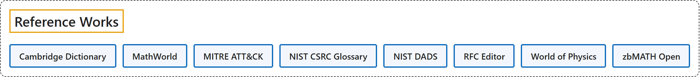

6. Reference Works
Classification

Glossary
| Term | Definition | 中文翻译 | Source |
|---|---|---|---|
| Reference Works 参考工具 |
(context) "a book of facts, such as a dictionary or an encyclopedia, that you look at to discover particular information" | （语境）一种汇集事实的书，如词典或百科全书，供人查阅以找到特定信息 | Cambridge University Press & Assessment, n.d., "reference book" noun |
| Cambridge Dictionary 剑桥词典 |
"Cambridge University Press has been publishing dictionaries for learners of English since 1995. Cambridge Dictionaries Online began offering these dictionaries completely free of charge in 1999 — and today, Cambridge Dictionary is still growing." | 剑桥大学出版社自 1995 年起一直在出版面向英语学习者的词典。剑桥在线词典于 1999 年开始完全免费提供这些词典，而如今，剑桥词典仍在不断发展。 | Cambridge University Press & Assessment, n.d., para. 1 |
| MathWorld MathWorld |
"MathWorld is the web's most extensive mathematical resource, provided as a free service to the world's mathematics and internet communities ..." | MathWorld 是网络上最全面的数学资源，作为一项免费服务提供给全世界的数学界和互联网社区…… | Wolfram Research, n.d., para. 1 |
| MITRE ATT&CK MITRE ATT&CK |
"MITRE ATT&CK® is a globally-accessible knowledge base of adversary tactics and techniques based on real-world observations." | MITRE ATT&CK® 是一个全球可访问的知识库，收录基于真实世界观察的对手战术与技术。 | The MITRE Corporation, n.d., para. 1 |
| NIST CSRC Glossary NIST CSRC 术语表 |
"This Glossary is an aggregation of terms and definitions specified in NIST's cybersecurity and privacy standards, guidelines, and other technical publications, and in CNSSI 4009-2022." | 本术语表汇集了术语和定义，它们出自 NIST 的网络安全与隐私标准、指南及其他技术出版物，以及 CNSSI 4009-2022。 | National Institute of Standards and Technology, n.d., para. 2 |
| NIST DADS 算法与数据结构词典（DADS） |
"This is a dictionary of algorithms, algorithmic techniques, data structures, archetypal problems, and related definitions." | 这是一部词典，收录算法、算法技术、数据结构、典型问题以及相关定义。 | Black, P. E., 2024, para. 2 |
| RFC Editor RFC 编辑部 |
(context) "RFCs outline computer networking and Internet foundations, including Internet Standards and historical or informative content. They are published by the RFC Editor for the IETF, IRTF, IAB, and ISE ..." | （语境）RFC 阐述计算机网络和互联网的基础，包括互联网标准以及历史性或信息性的内容。它们由 RFC 编辑部出版，出版对象包括 IETF、IRTF、IAB 和 ISE…… | RFC Editor, n.d., para. 1 |
| World of Physics 物理学世界（Eric Weisstein's World of Physics） |
(context) "Eric Weisstein's World of Science contains budding encyclopedias of astronomy, scientific biography, chemistry, and physics." | （语境）Eric Weisstein 的科学世界（World of Science）包含若干正在成长的百科全书，涵盖天文学、科学传记、化学和物理学。 | Weisstein, E. W., n.d., para. 1 |
| zbMATH Open zbMATH Open |
"zbMATH Open (formerly known as Zentralblatt MATH) is the world's most comprehensive and longest-running abstracting and reviewing service in pure and applied mathematics." | zbMATH Open（原名 Zentralblatt MATH）是世界上最全面、历史最悠久的文摘与评论服务，覆盖纯粹数学和应用数学。 | FIZ Karlsruhe, n.d., "Overview" section, para. 1 |
References
Black, P. E.. (2024). Dictionary of Algorithms and Data Structures. Retrieved October 27, 2026, from https://xlinux.nist.gov/dads/
Cambridge University Press & Assessment. (n.d.). About Cambridge Dictionary. Retrieved October 27, 2026, from https://dictionary.cambridge.org/about.html
Cambridge University Press & Assessment. (n.d.). Reference book. In Cambridge Dictionary. Retrieved October 27, 2026, from https://dictionary.cambridge.org/dictionary/english/reference-book
FIZ Karlsruhe. (n.d.). About. Retrieved October 27, 2026, from https://zbmath.org/about/
National Institute of Standards and Technology. (n.d.). Glossary. Retrieved October 27, 2026, from https://csrc.nist.gov/glossary
RFC Editor. (n.d.). The official home of RFCs. Retrieved October 27, 2026, from https://www.rfc-editor.org/
The MITRE Corporation. (n.d.). MITRE ATT&CK®. Retrieved October 27, 2026, from https://attack.mitre.org/
Weisstein, E. W.. (n.d.). About Eric Weisstein's World of Science. Retrieved October 27, 2026, from https://scienceworld.wolfram.com/info/
Wolfram Research. (n.d.). About MathWorld. Retrieved October 27, 2026, from https://mathworld.wolfram.com/about/